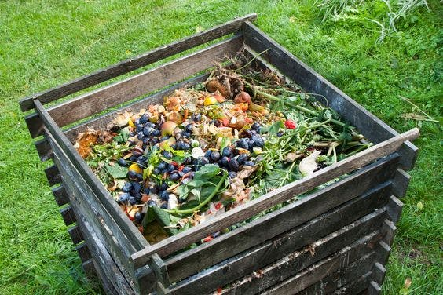

الدِّمْن أو السماد العضوي أو الطبيعي يتكون بتحلل مواد عضوية بواسطة البكتيريا بعد جمع المخلفات الحيوانية مثل روث الابقار والمواشي الأخرى وتكويمها في مكان نظيف ويمكن لأي مزارع أن يقوم بإنجازها في مزرعته بواسطة إمكانياته من عمال وعربة جرار لجمع المخلفات وتكويمها، ترش بالماء أسبوعيا وتقلب كل شهر مرة وهكذا لمدة (9-12شهرا) لضمان تحللها وموت بذور الأعشاب إن وجدت بها ويمكن خلال هذه الفترة إن امكن إضافة أوراق النباتات الجافة وخاصة البقولية منها لرفع نسبة النيتروجين ويمكن إضافة جير (بودرة الجير) لقتل الحشرات والفطريات وزيادة نسبة الكالسيوم حسب معدل الكومة مثلا طن يضاف له من 2-3 كيس وزن 10 كجم نثرا وكذلك يمكن إضافة كبريت زراعي لزيادة التفاعل بمعدل كيس للطن والرش بالماء مع كل عملية، وبعد انتهاء المدة وضمان تحلل السماد وبرودته، يحذر من استخدام السماد الحيواني مباشرة حيث يحتوي على نسبة عالية من مادة اليوريا التي تحرق النباتات أو الشتلات الا إذا استخدم على أرض غير محروثة وتحرث عدة مرات حتى يضمن خلطه مع التربة ثم تروى ثم تحرث مرة أخرى وبعد ذلك تخطط وتزرع اما للتسميد فلا بد من تخميره وتحللها للمدة المذكورة، ويستعمل للشتلة عمر سنة معدل نصف سطل 2كجم/شهر (عند اعتدال الجو) مع الري.